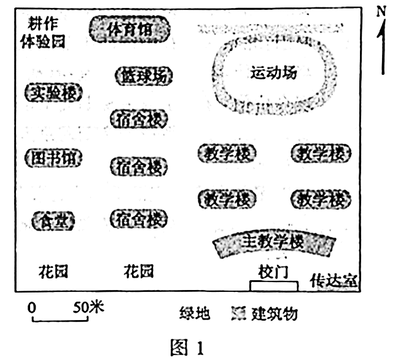
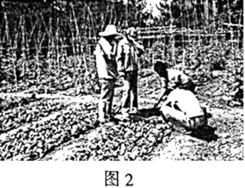
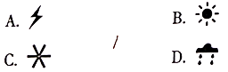
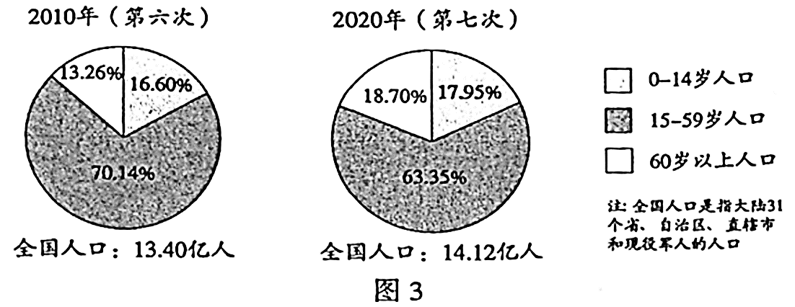

2021年北京市中考地理真题 · 选择题 第1、2、3、4、5题
校园生活处处有地理。图1为某校园平面图。读图，完成第1~3题。

1.图1校园中
A.主教学楼在校门正北
B.图书馆紧邻着教学楼
C.实验楼到运动场最近路线经过食堂
D.耕作体验园的面积约为250平方米
2.学校每周一10:00举行升国旗仪式，有同学发现年中此时刻旗杆影长不同。产生这种现象的原因是
A.地球自转 B.地球公转 C.地球形状 D.地球大小
3.图2为同学们在耕作体验园劳动的照片。下列天气符号中，能反映当时天气状况的是


我国已完成七次全国人口普查工作。图3为第六次、第七次全国人口普查部分数据统计图。读图，完成第4、5题。

4.2010-2020年间
A.0-14岁人口数量减少
B.15-59岁人口比重增加
C.60岁以上人口比重增加
D.全国人口增长超过1亿
5.人口普查可以
①掌握人口规模的变化
②查清人口结构的状况
③改变人口空间分布格局
④提供人口政策制定的依据
A.①②③ B.①②④ C.①③④ D.②③④
传统民居是反映地方地理环境的一面镜子。图4为我国两地传统民居的简笔画。读图，完成第6~8题。